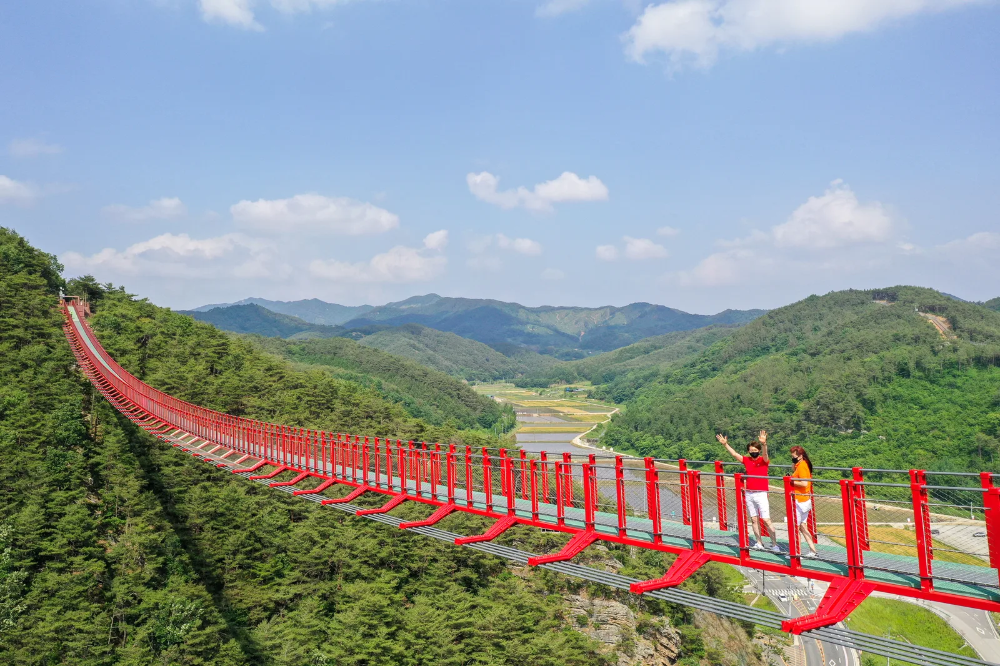
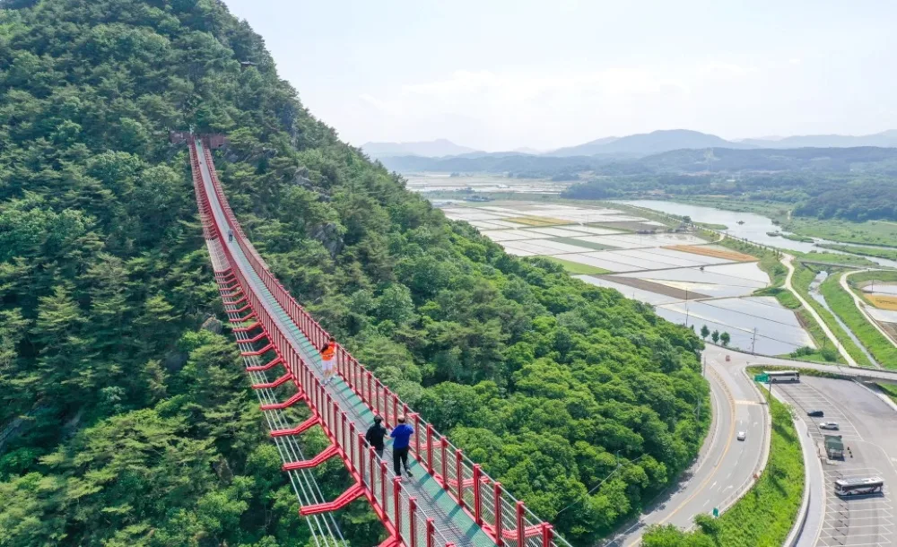
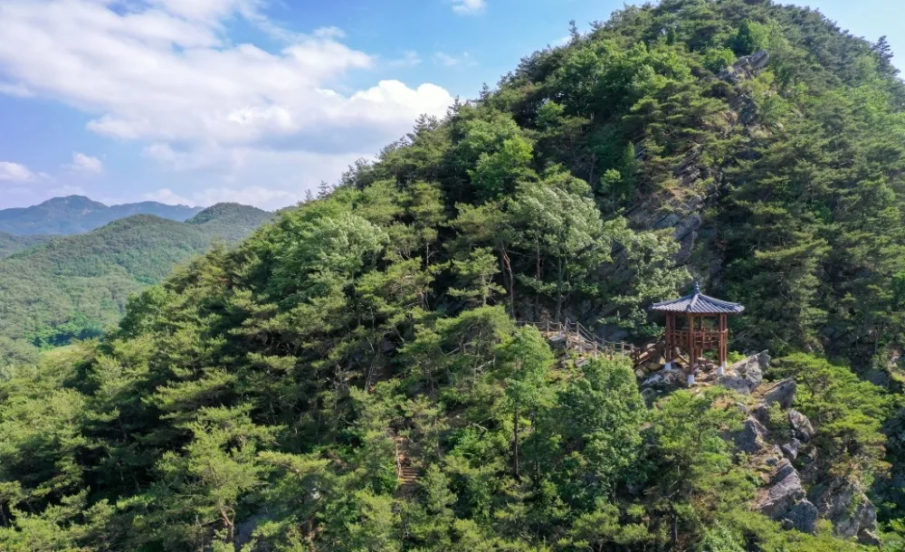
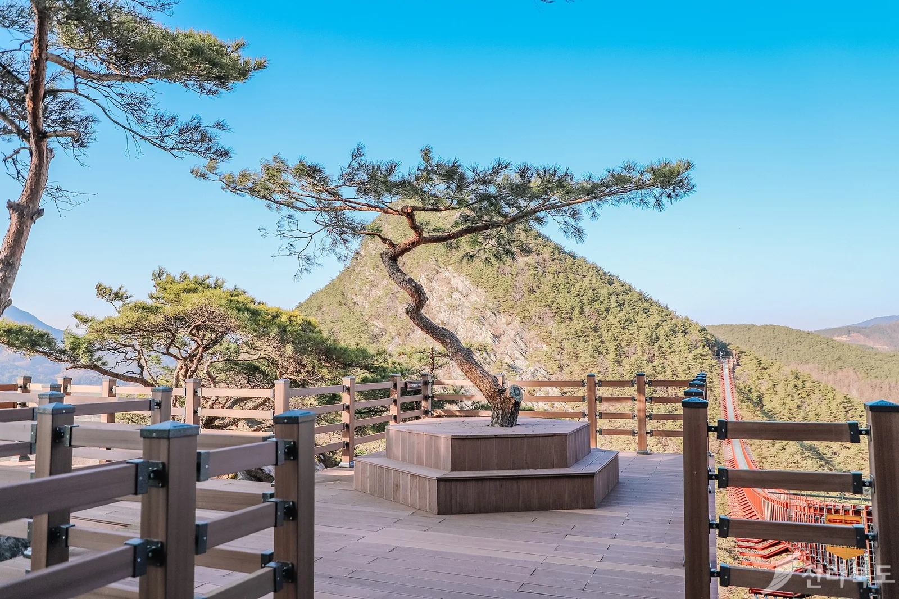
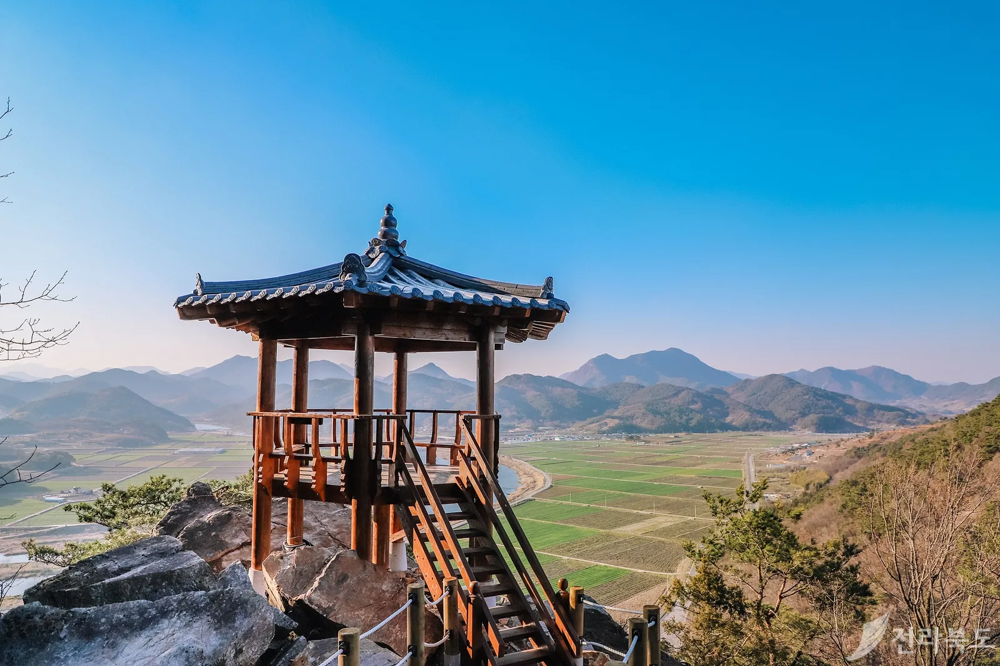
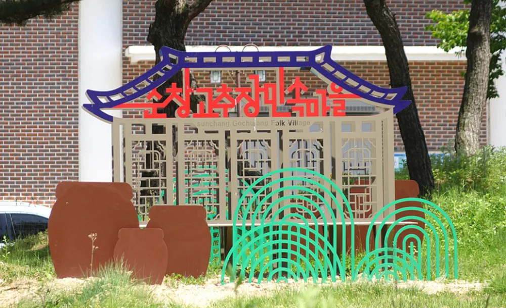
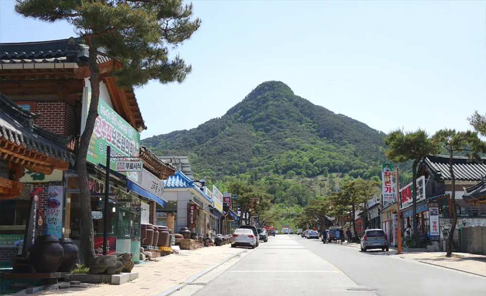

▲ 국도 24호선으로 갈라진 두 봉우리를 잇는 길이 270m 채계산 출렁다리. 가장 높은 지점은 지상 약 90m에 달한다 사진=전북특별자치도
1. 순창에 다리가 하나 더 있다, 그것도 훨씬 큰 게
순창 여행을 검색하면 가장 먼저 나오는 다리는 강천산 구름다리다. 붉은색 난간에 길이 78m, 높이 50m. 순창을 대표하는 사진 명소로 오래전부터 자리 잡았다. 그런데 순창에는 이보다 세 배 넘게 긴 다리가 하나 더 있다. 적성면 채계산, 국도 24호선이 산줄기를 둘로 갈라놓은 자리에 놓인 채계산 출렁다리다.
채계산은 도로 하나를 사이에 두고 남쪽 봉우리(적성 채계산)와 북쪽 봉우리(동계 채계산)로 나뉜다. 2020년 3월 27일, 이 두 봉우리를 길이 270m, 최고 높이 약 90m의 무주탑 산악 현수교가 이었다. 중간에 다리를 받치는 주탑이 하나도 없는 구조로는 국내 산악 지형 중 최장급으로 꼽힌다. 산은 크지 않다. 정상 채계산(송대봉)은 해발 약 342m로 동네 뒷산에 가깝다. 그런데도 다리 하나 때문에 전국구 출사지가 됐다.

▲ 다리 아래로 국도 24호선과 적성강변 들판이 내려다보인다. 다리가 나뉜 두 봉우리를 있는 그대로 이어준다 사진=전북특별자치도
2. 다리 스펙 — 왜 '국내 최장급'인가
채계산 출렁다리가 놓이기 전, 국내 산악 현수교 중 무주탑 구조로 가장 긴 다리는 대개 100m 안팎이었다. 270m는 그 두 배를 훌쩍 넘는 길이다. 보행 폭은 1.5m로 넉넉하지 않지만, 최대 1,300명이 동시에 올라설 수 있고 초속 66m의 강풍도 견디도록 설계됐다.
| 항목 | 내용 |
|---|---|
| 위치 | 전북특별자치도 순창군 적성면 (남원시 대강면 경계, 국도 24호선 상공) |
| 구조 | 무주탑 산악 현수교, 길이 270m · 통과 폭 1.5m |
| 높이 | 지상 최저 약 75m ~ 최고 약 90m |
| 개통 | 2020년 3월 27일 |
| 안전 설계 | 최대 수용 1,300명, 최대 풍속 66m/s 견딤 |
| 이용료 | 입장료·주차료 모두 무료 |
| 운영시간 | 하절기(3~10월) 09:00~18:00 · 동절기(11~2월) 09:00~17:00 |
강풍·강우·강설·태풍특보가 발효되거나 시설점검이 있는 날에는 다리 통행이 통제될 수 있다. 기상청 기준 강풍주의보(평균풍속 초속 14m 이상 또는 순간최대풍속 초속 20m 이상)만 발효돼도 통행이 즉시 금지되는 만큼, 다리 자체의 설계 풍속(66m/s)과는 별개로 방문 전 순창군 홈페이지나 관광 안내 채널에서 통제 여부를 확인하는 편이 헛걸음을 줄인다. 절벽 사이에 놓인 다리 특성상 지상보다 바람이 세게 부는 구간이라는 점도 감안해야 한다.
3. 이름이 왜 세 개일까 — 채계산, 책여산, 적성산

▲ 능선을 따라 겹겹이 이어지는 암릉. 책을 쌓아 올린 모양과 닮았다 하여 '책여산'이라는 별칭이 붙었다 사진=전북특별자치도
채계산은 순창 적성면과 남원 대강면 경계에 걸쳐 있는 산으로, 화강암과 사암 노두가 교차하며 급경사 사면과 완만한 능선이 반복된다. 이 겹겹의 능선이 수만 권의 책을 포개 쌓은 모양과 닮았다 해서 책여산(冊如山)이라는 별칭이 붙었다. 또 적성강변 임동마을 매미 터에서 동쪽을 바라보면, 산줄기가 비녀를 꽂은 여인이 누워 달을 보며 창을 읊는 모습(월하미인·月下美人)과 닮았다 하여 채계산(釵筓山)이라 불린다는 유래도 전해진다. 산 아래로 섬진강 상류 구간인 적성강을 끼고 있어 적성산(赤城山)으로도, 화산옹 바위 전설이 깃들어 있어 화산(華山)으로도 불린다. 회문산·강천산과 함께 순창의 3대 명산으로 꼽힌다.
도로로 나뉜 두 봉우리의 높이도 다르다. 다리 남쪽인 적성 채계산(송대봉)은 해발 약 342m, 북쪽인 동계 채계산은 약 361m로 등산 안내판마다 표기가 조금씩 다르다. 큰 산은 아니지만 암릉 구간이 많고 사계절 변화가 뚜렷해 봄 신록, 여름 녹음, 가을 단풍, 겨울 암릉이 각각 다른 느낌을 준다.
4. 등산코스 — 다리만 보고 올지, 정상까지 갈지
가장 가볍게 다녀오는 방법은 제1주차장 → 계단로 → 출렁다리 왕복 → 원점회귀다. 주차장에서 다리 입구까지는 계단과 오르막 산길로 약 340m, 공식 안내 기준 도보 약 30분이 걸린다. 다리를 건너는 시간 자체는 길지 않아서, 오르내리는 시간까지 합쳐 전체 관람에 1시간~1시간 30분을 잡는 편이 현실적이다.

▲ 어드벤처전망대에서 바라본 채계산 봉우리와 출렁다리. 소나무 가지 사이로 다리가 이어진 모습이 보인다 사진=전북특별자치도
시간이 넉넉하다면 정상까지 묶는 코스도 있다. 제1주차장 → 어드벤처전망대 → 출렁다리 → 월하정 → 칼바위 능선 → 송대봉(정상) → 원점회귀 순서로, 암릉 구간이 이어져 등산화는 챙기는 편이 좋다. 일부 안내에서는 정상을 지나 당재 → 무량사 입구로 내려오는 종주형 코스도 소개한다.
| 구분 | 경로 | 소요시간 |
|---|---|---|
| 가벼운 코스 | 제1주차장-계단로-출렁다리 왕복-원점회귀 | 약 1시간~1시간 30분 |
| 표준 코스 | 제1주차장-어드벤처전망대-출렁다리-월하정-칼바위 능선-송대봉(정상)-원점회귀 | 약 3시간 안팎 |
| 종주 코스 | 출렁다리-송대봉-당재-무량사 입구 | 산행 경험자 권장 |
📍 계단이 많은 코스
출렁다리 진입로는 계단과 오르막이 이어지는 구간이다. 미끄럼 방지 등산화를 권장하고, 우천 직후에는 암릉과 계단이 미끄러울 수 있어 주의해야 한다. 노을 무렵에는 능선과 계곡의 명암 대비가 강해져 사진 찍기에 특히 좋다는 평이 많다.
5. 적성강 드라이브와 강천산 구름다리 — 헷갈리지 말아야 할 것

▲ 정자에서 내려다본 적성강변 들판. 채계산은 섬진강 상류 구간인 적성강을 끼고 있다 사진=전북특별자치도
채계산이 끼고 있는 강은 적성강이다. 정확히는 섬진강 상류 구간의 별칭으로, 순창군 적성면 평남리 부근에서 오수천과 합류하는 지점부터 비로소 '섬진강'이라는 이름으로 불린다. 국도 24호선을 따라 적성면 일대를 달리면 강줄기와 채계산 암릉이 번갈아 시야에 들어오는 드라이브 코스가 이어진다.
순창을 검색하면 함께 뜨는 강천산 구름다리는 채계산과는 완전히 다른 곳이다. 1981년 국내 최초 군립공원으로 지정된 강천산군립공원 안에 있으며, 신라시대 887년 창건된 고찰 강천사와 구장군폭포로도 유명하다. 두 다리 모두 순창 대표 관광지지만 위치도, 규모도 다르다는 점은 미리 알아두는 편이 좋다.
| 구분 | 채계산 출렁다리 | 강천산 구름다리 |
|---|---|---|
| 위치 | 순창군 적성면 (남원 대강면 접경) | 순창군 팔덕면, 강천산군립공원 내 |
| 길이·높이 | 270m · 최고 약 90m | 78m · 중앙 높이 약 50m |
| 구조 | 무주탑 산악 현수교 | 협곡 현수교 |
| 주변 명소 | 월하정, 칼바위 능선, 송대봉 | 강천사(887년 창건), 구장군폭포, 병풍바위 |

▲ 강천산군립공원 계곡. 채계산에서 차로 20~30분 거리에 있는 순창의 또 다른 대표 명소다 사진=전북특별자치도
채계산에서 강천산군립공원까지는 차로 약 20~30분 거리다. 가을 단풍철에는 두 곳을 하루 코스로 묶어 대한민국 구석구석에서 추천 코스 확인 가능하다. 강천산은 특히 늦가을 야간 단풍 조명 행사로도 알려져 있어, 낮에는 채계산, 저녁에는 강천산으로 동선을 짜는 여행자도 많다.

▲ 단풍철 강천산 계곡. 수면에 비친 단풍 반영이 순창 가을 여행의 대표 장면으로 꼽힌다 사진=순창군
6. 주차·입장료와 인근 연계 관광지
내비게이션에는 '채계산 제1주차장'(순창군 적성면 괴정리 산31-3)을 입력하면 찾기 쉽다. 입장료와 주차료는 모두 무료이며, 주말·단풍철에는 주차장이 붐빌 수 있어 오전 이른 시간 방문을 권한다.

▲ 순창전통고추장민속마을(발효테마파크) 입구. 채계산에서 차로 20분 안팎 거리다 사진=전북특별자치도
채계산 인근에서 함께 묶어볼 만한 곳으로는 순창전통고추장민속마을(발효테마파크)이 꼽힌다. 1994~1997년 조성된 발효식품 특화단지로, 장류 체험관과 발효소스토굴 등 전시·체험 시설을 갖췄다. 채계산에서 차로 약 20분, 13km 거리다.

▲ 고추장민속마을 거리에서 바라본 아미산 자락. 장류 음식점과 체험관이 늘어서 있다 사진=전북특별자치도
강천산군립공원(구름다리·강천사)까지는 차로 20~30분, 여기서 다시 섬진강향가오토캠핑장까지는 약 15km(차로 30분) 거리라 캠핑 일정과 묶는 여행자도 있다. 채계산-고추장민속마을-강천산을 하루 동선으로 잡으면 적성강 드라이브까지 자연스럽게 포함된다.
✅ 출발 전 확인할 것
· 내비 검색은 '채계산 제1주차장' — 강천산 구름다리와 헷갈리지 말 것
· 운영시간은 하절기 09:00~18:00, 동절기 09:00~17:00
· 강풍·강우·강설·태풍특보 시 통행 통제 가능
· 주차장에서 다리 입구까지 계단·산길 약 340m, 도보 약 30분
· 입장료·주차료 모두 무료
· 고추장민속마을·강천산군립공원과 하루 코스로 연계 가능